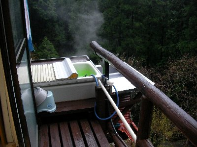

水窪で古民家 | 2011年4月 幹事：じゅんじゅん、連絡員：べっしー |
|---|---|
| 先週、満観峰ハイクの時に、「そー言えば水窪行ってないな〜。行きたいな〜」と、話をしていたところ、ちょうど水窪特派員のじゅんじゅんから「水窪の古民家再生のお手伝いしない？」と連絡が入った。で、話が進んで翌週早速と行ってみた。急なことだったのに、総勢6名（じゅんじゅん入れて7名）が、静岡の秘境（かもしれない）、水窪を訪ねたのでした。 遅めの集合だったので、佐久間で昼食をかねて集合。昼から山菜天ぷら定食を頂き、春を満喫です。しかし、この日は雨。小春日和を期待したけど、時折強く雨と風が吹きつけます。 水窪に行く前に、佐久間で山菜採りをしました。雨なのに？そうです、雨なのに。 案内してもらったところは、民家の目の前の川。両側がコンクリートブロック壁ですが、途中に野草が生えている場所があります。そこでワラビ等が取れるとの事。野に入っていくかと思いきや、見慣れた川。しかも雨。 こーなりゃやるか！ 数人がレインコートを着込み、雨の中、沢に下りていきます。 草むらを探すと、確かにワラビが生えています。30分ほど探して、結構なワラビが採れました。 その後、よもぎ饅頭とお茶を頂き、体と心を温めて本日の買出しに出発です。 | |
 秘密基地のような別荘 |  秘密基地の中は、こんな感じ |
| 本日は、古民家再生をしている方の別荘（古民家風）に、泊めさせて頂くことになっています。道具等は有るようなので、食料だけを持っていけば良いらしいのですが、案内人のじゅんじゅんさえ見たことが無い物件なので、詳細はわかりません。取りあえず鍋と肉を焼くか。と材料を買い込みます。もちろんお酒も忘れずに。あ、お肉は鹿と羊♪ 古民家を再生している場所は、水窪の町中から、さらに30分山に入った「大沢」と言う所です。途中の道が雨のためか、土砂崩れを起こしているような場所です。 大沢は「天空の里」と言うだけあって、山の斜面にあります。普通、集落は平地や谷間などにあるかと思いますが、ここは山の斜面（しかも上の方）に、昔ながらの家が立ち並んでします。斜面は結構きついですよ。 挨拶にお宅を訪れると、なぜかお蕎麦が振る舞われました。椎茸のダシのツユだそうで、とても美味しい。 雨の中、本日のお宿に向かいます。集落から野山を歩くこと10分。沢の横、崖の上に立つ小屋を発見しました。正直言いましょう。私は初め「ゲゲゲの鬼太郎ハウス」かと思いました。これ、悪い意味ではなく、凄く「楽しそう！面白そう！」と思ったのです。 | |
|  そして露天風呂！ |  夕食風景 |
| ちゃんと電気も通っていて、中には囲炉裏があり、トイレもあり、なんと露天風呂もあります！ 全てが工夫して手作りしているようで、大人の秘密基地みたいな感じです♪ 露天風呂は、ベランダに小さい浴槽がくくり付けてあり、横は崖です。なんか開放感があって気持ちいいです。 で、本日の夕食は、鍋（マーボー鍋だったか？）と、焼き肉です。いや〜、ビールが美味いな。 翌日、晴れ。 朝食はご飯と、肉キャベツ炒め、汁物、昨日採ったワラビ（一晩アク抜き済）を頂き、「さあ、古民家再生やるぞ」と勢い込んで行くと、じっちゃんが「いいの、いいの、若い皆さんの話を聞きたいの。ここ大沢に人が来てもらうには、どうすればいいかとか」と、本日の作業はやらない様子。まあ、昨日の雨で予定がずれたのだろう。 取りあえず古民家を見せてもらった。 古民家再生と言っているが、最近まで使っていたようで、お世話になった、じっちゃんの隣の家だ。じっちゃんの家も築130年と言っているので、十分古民家だが、再生するお宅は、さらに古いらしい。 家自体はしっかりしていて、どこかが壊れているとかでは、ないようだ。構想は、多くの人に、大沢を知ってもらい古民家に宿泊して癒されてもらいたい。大沢の良さや歴史を途絶えさせないようにしたい。ってことなんだね。 一見すると平屋建てのような家は、実は二階建てである。昔よくあった日本家屋だね。柱や梁も太く、囲炉裏の煙で燻されて黒くなっている。これ煤が付いたところを磨くんだってね。囲炉裏も現存です。 電気を通さず、ランプの明かりだけにしたいとか。ゆくゆくは露天風呂も作りたいとか。 う〜ん、再生してみたいね。 | |
 再生古民家の縁側で |  古民家の中 |
| ま、今回は何もしないらしいので、近くの三段釜の滝を見に行く。 山肌を３０分位降りて行くと、大きな滝が見える。ちゃんと整備すれば観光名所になりそうな滝だ。手前の杉林を撤去すれば・・・・・ で、滝見学から帰ってくると、じっちゃんが昼飯を用意してくれていた。（実際に準備するのは、ばっちゃんだけど） 椎茸の混ぜご飯おにぎり。これが甘くて美味しい！。椎茸とクルミ和え、タラの芽炙り味噌付け、味噌汁、他にも沢山出たけど、名前思い出せない。お腹一杯美味しいもの頂きました♪ 昼食後、じっちゃんと話をしたり、家を見せてもらったり、とても楽しかった。帰りにタラの芽のお土産まで貰ってしまい、何もしてないのにな〜なんて思いながら帰路についたのでした。 次回こそ、古民家再生のお手伝いが出来たらなって思います。 | |
 三段釜の滝への道のり |  三段釜の滝 |
| 写真＆コメント by べっしー | |